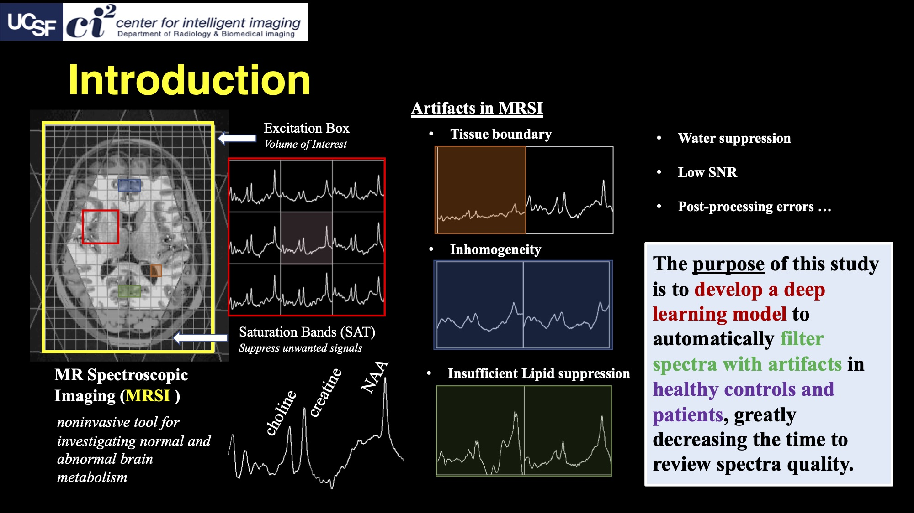
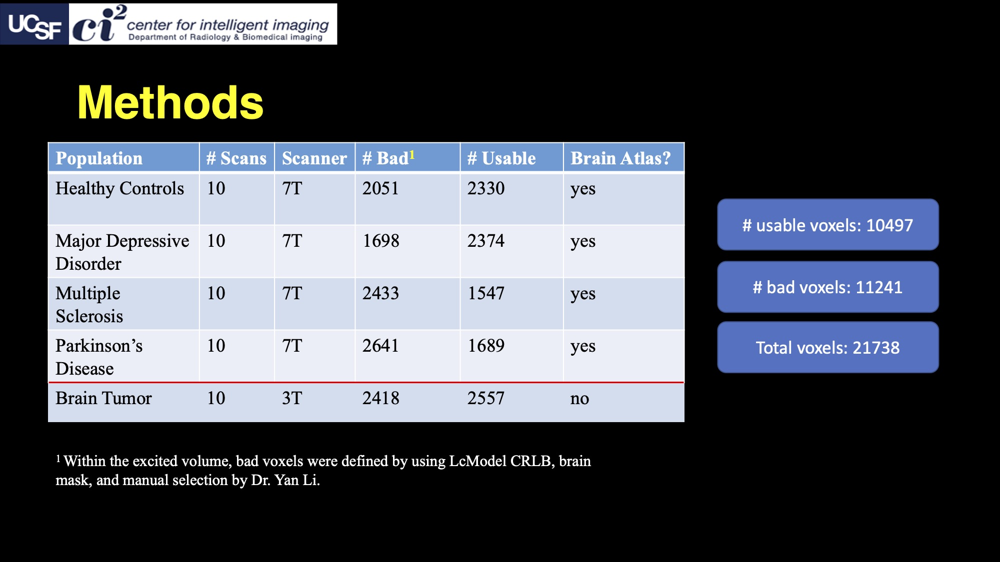
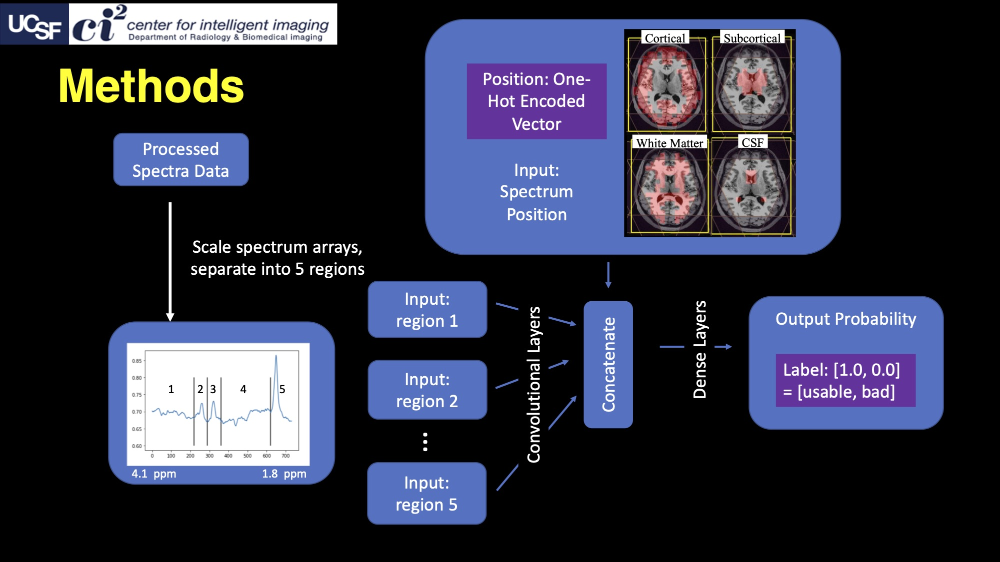
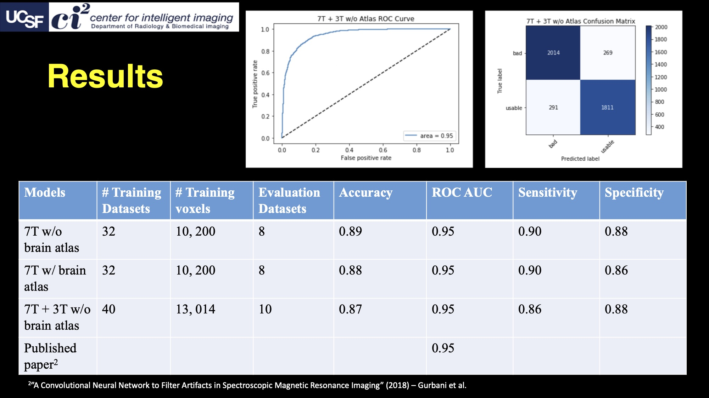
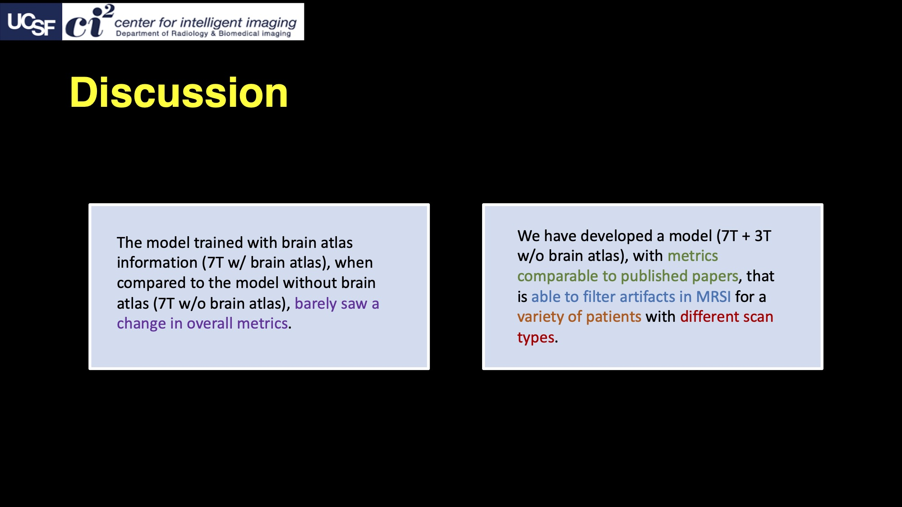

Introduction

MRSI stands for magnetic resonance spectroscopic imaging. Basically, it's a tool that lets you detect all sorts of chemicals and metabolites in a scan of the brain, noninvasively.
In the figure on the left, you see a brain. That brain was scanned using an MRI scanner. On top of the brain, you see a grid. That grid is the data from the MRSI scanner.
There's a red box on the grid, and on the right of the brain, that's the same red box but zoomed in. There are 9 "voxels," aka 3d pixels, in the red box. Each voxel contains a squiggly line -- that squiggly line is a spectrum, where the x-axis represents frequency and the y-axis represents amplitude. Using the spectrum, you can see the different metabolites in the brain. For example, the three peaks in the spectrum down below represent Choline (Cho), Creatine (Cr), and N-acetylaspartate (NAA).
However, artifacts sometimes arise in MRSI. Basically, the MRSI spectrum gets a little distorted and messed up. This happens because of many reasons, such as the ones in the list on the left: tissue boundary, field inhomogenity, insufficient lipid suppression, etc.
There's a lot of types of these artifacts, but researchers need to filter out all of these artifacts to be able to use MRSI data. Right now, they need to look at each individual voxel to filter out each individual artifact. You can imagine, this will definitely be very time consuming for brain scans that have thousands of voxels.
To help with this, I decided to create a machine learning (ML) model that can automatically filter artifacts from MRSI, which will significantly reduce the time spent reviewing spectra!
For more information about MRSI, check out this paper: MR Spectroscopy and Spectroscopic Imaging of the Brain
Methods - Data

I had 50 datasets to train the ML model. There was a big variety of patients: they had different diseases (depression, multiple sclerosis, etc.) and different scan types (brain tumor patient was acquired at 3T instead of 7T).
Each voxel was labelled as "bad," if it contained an artifact, or "usable," all the rest of the voxels. The voxels were labelled with some MRSI preprocessing algorithms, and after, Dr. Li went and manually labelled some more voxels. The two label classes were actually very balanced!
Most of the patients had brain atlas data. The brain atlas provided information about which part of the brain a given voxel is in.
Methods - Model

I had to preprocess the data of each spectra before putting it all in the ML model. I scaled each voxel to a reasonable range and split the voxel so that in was in the frequency range of interest (4.1 ppm to 1.8 ppm).
Next, I separated each voxel into 5 regions based on known metabolite peaks. Each region independently went through some convolutional layers for feature extraction. After the convolutions, the 5 regions were concatenated back together along with the brain atlas data.
I represented the brain atlas data as a one-hot encoded vector (like what they do in natural language processing). Each vector corresponded to one of the following brain regions: cortical, subcortical, white matter, and cerebrospinal fluid.
This concatenation went through a couple more dense layers until it reached an output probability of usable and bad.
Results

I trained 3 models. The first two are basically comparing models trained with or without the brain atlas. The last model includes all the different patients and scan types. The top two figures show some metrics for the last model. The metrics that I focused on -- accuracy, ROC AUC, sensitivity, and specificity -- were very similar across all three models. Speaking of ROC AUC, we compared it to a published paper and found that the metric was the same. One important thing -- the paper only trained and evaluated on one type of patient and one type of scan (brain tumor at 7T).
Discussion

From the results, I first saw that adding in brain atlas data barely affected the model.
Next, I saw that I successfully trained a model that can filter artifacts in MRSI. Additionally, this model can do this for many types of patients and different types of scans, which makes it a lot more flexible than the current works!
Thanks!
Huge thanks to Dr. Yan Li and Dr. Huawei Liu for teaching me all about MRSI in this internship. Also,
a big thanks to the rest of the group that I worked with -- I got to listen to their own MRSI projects,
which was also very interesting!